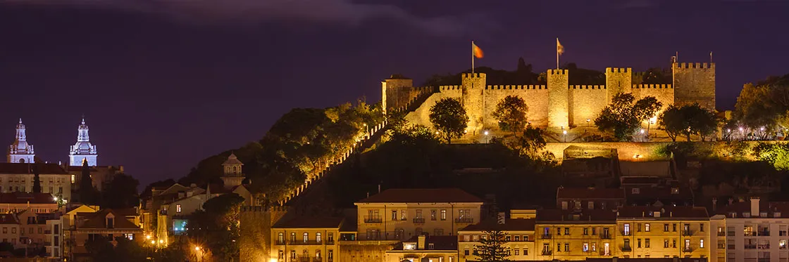
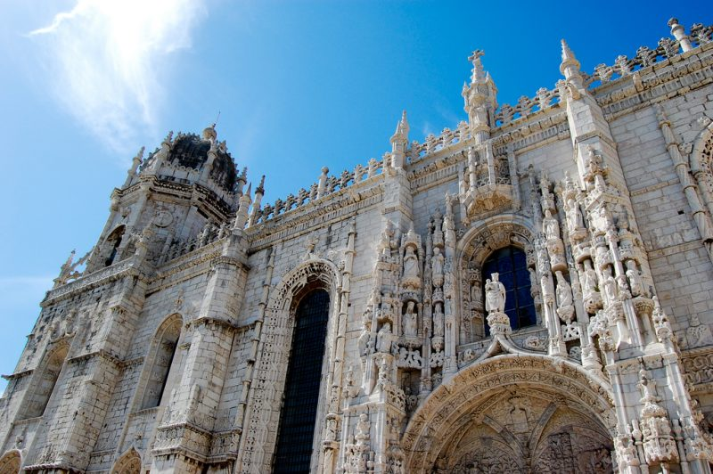

LE CHATEAU SAINT-GEORGES
La première chose à faire lorsque l’on vient visiter Lisbonne est le Château Saint-Georges. Cet imposant monument est situé sur une colline surplombant le centre historique de la ville. Solidement fortifié, c’est un château Maures qui remonte aussi loin que l’époque médiévale. Aujourd’hui, il est extrêmement populaire, et ses terrasses ombragées appelées miradouro offrent une superbe vue sur Lisbonne et le Tage. En plus de la vue, la visite du Château Saint-Georges vous propose de découvrir un musée qui conserve d’anciennes ruines, des tours – dont la Tour Ulysse – les murailles ainsi que des jardins.
LE MONASTERE DES HIERONYMITES
Le Monastère des Hiéronymites est un impressionnant monastère situé dans la paroisse de Belém. Démarré en 1501 et achevé 100 ans plus tard, le monastère est un excellent exemple de l’architecture portugaise. Egalement répertorié sur la liste du patrimoine mondial de l’UNESCO, il est à faire de préférence avec la Tour de Belém !
LA TOUR BELEM
Une balade pour aller voir la Tour de Belém est fortement recommandée. Classée au patrimoine mondial de l’Unesco, cette tour fortifiée du 16ème siècle est impressionnante et magnifique, avec son architecture manuéline. Durant votre visite, vous pourrez contempler les magnifiques balcons et ornements sculptés dans de la pierre calcaire, les tourelles ainsi que la statue de Notre-Dame-du-Bon-Succès !